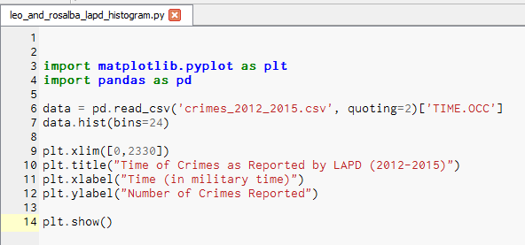
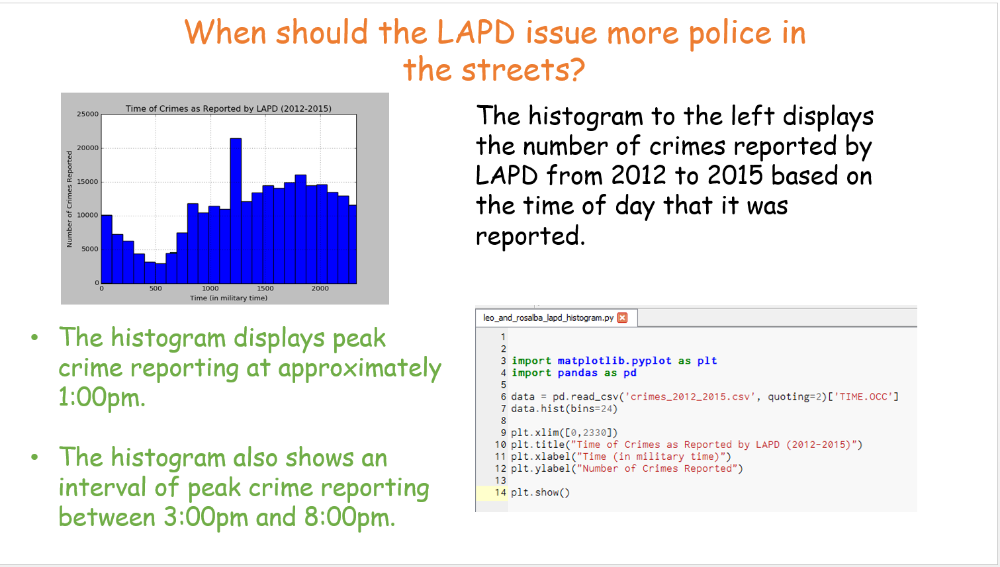

Scratch Project
The Story of CSP
A collaboration with Anthony Pittman
App Inventor Project
Magic 8-Ball Tablet (.apk file)

Magic 8-Ball Tablet (.aia file)

Project 1.4.7 Image Artist
Original Minion Image

Pixel by Pixel Change (Red Eyes)
Mask (Minions Text)

Mask Applied

Final Product- Python Code (.py file)

Python Code (PDF)

Client Developer Situation--Investigating with Data
Our team was assigned to answer the following question:
When should the LAPD issue more police in the streets?
We used a set of data provided by our client to dissagregate data of crimes reported by the LAPD from 2012 to 2015 and determine peak crime reporting from the LAPD. We used a histogram to display our data and used the information to determine peak crime reporting and, therefore, make a recommendation to our client regarding increasing police presence.
LAPD Crime Reported 2012-2015 (click to download)
Investigating Data: LAPD Crime Reporting- Python Code (Click to download .py file)
Investigating Data: Histogram with Results (Click to download .pptx file)
